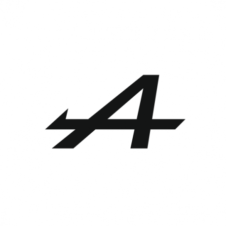

Identification
Marque: ALpine
Pays: France
Date du 1 er Rally: 1970 Monte carlo
2 titres 1970-1973
Modeles Mythiques: A110, A310

La légendaire A110
A110 'La Berlinette'


Crée par Jean rédelé Alpine voit le jour en 1955 , motorisé par renault la Berlinette se fera remarqué par son agilité legendaire sur les routes de rally
Moteur: de 956 cm3 à 1 800 cm3 et de de 55 à 200 ch, en rallye avec turbo jusqu'à 250 ch, poids de 565 à 790 kg
Modéles presentés:
1-Norev 1/64: Monte carlo 1973 #11 Jean-Claude Andruet - Michèle Espinosi-Petit 'Biche' (P6)
2- Solido 1/43: Monte carlo 1973 #11 Jean-Claude Andruet - Michèle Espinosi-Petit 'Biche' (P6)
3- Heller 1/24 : Diorama (Restore Model cars) Tour de Corse 1973 #1 Jean Pierre Nicolas - Michel Vial (P1)- #5 Jean-François Piot - Jean De Alexandris (P3)